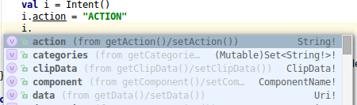

Russisch unterwegs!
für die moderne
Android-Entwicklung

? for help

Russische Insel
im finnischen Golf, 32km vor Petersburg
statisch typisierte
Allzweck-Sprache
für JVM und Browser
Datenblatt
Freie Software
APL 2.0 – IDE, compiler, libs, build tools
backed by JetBrains
20 Vollzeit & Community
„dogfooding“: 0,5 Mio. LOC
Stabil
Start: ~2010, v1.0 Feb. '16
Long-term backward compatibility
Integrationen
IntelliJ, Eclipse
Maven, Ant, Gradle
Hello Kotlin!
Im Browser mitmachen & ausprobieren
 http://try.kotl.in/
http://try.kotl.in/
Android Studio – 1. Plugin installieren

Android Studio – 2. Kotlin im Projekt aktivieren

Kotlin in Aktion
import java.util.*
fun main(args: Array<String>) {
val name = if (args.size > 0) args[0] else "Publikum"
val zuschauer = Gast(name, title = Title.wertes)
println(zuschauer)
println("Hallo ${zuschauer.title} ${zuschauer.name}")
}
data class Gast(val name: String, var zeit: Date = Date(),
val title: Title?)
enum class Title { Herr, Frau, wertes }
← Optionale Semikolons
← Top-level function
← Type inference &
optional/named Params
← Expressions im String
← Data Class
← val vs. var

Kotlin
&
Android
 +
– Ein Dream-Team?
+
– Ein Dream-Team?
- konzipiert für den industriellen Einsatz
- viele Vorteile
– effizientere Entwicklung, verbesserte Code-Lesbarkeit,
Nullpointer Sicherheit, Extension methods, infix Notation, …
- erzeugt von Haus aus Java 6 Bytecode
Java 8 + Android: in Teilen mit Android N, Jack compiler oder retrolambda
- 100% Java Kompatibilität – freies Mischen von Java & Kotlin-Code
-
Exzellentes Tooling
- hauseigener IDE-Support (IDEA & Android Studio)
- Gradle (Androids Buildsystem) seit v3.0 mit Kotlin
- Dedizierte Frameworks & DSLs – Kotlin Android Extensions & Anko
- Kleine Runtime – ca. 736KB in 1.0.3
Sicherheit
The
billion-dollar
mistake
null und die
java.lang.NullPointerException
non-nullable vs. nullable Typen
Umgang mit null-Typen
Spezieller Typ Klasse!

Kann nicht mit Kotlin erzeugt werden!
typische Android-Problemstellung
In beiden Fällen wirft Kotlin eine sprechende Exception, falls das Property nicht ordentlich initialisiert wurde.
First-class immutables
Nur-lesbare Variablen
aufwandsfrei durch val statt var
Standard-Collections sind read-only
Das Standard-Interface in Kotlin bietet nur die Leseoperationen an.
Möchte man Einträge verändern benötigt man z.B. MutableList statt List
Achtung: Keine Laufzeit-Checks à la Collections.unmodifiableX()
geschlossene Klassen und Methoden
Sowohl Klassen als auch Methoden sind final by default!
open class ExtendableClass {
open fun overridableMethod() { … }
}… aber nicht ganz unproblematisch
Prägnanz
Java
List<String> list = Arrays.asList("a","b","c");
for (int index = 0; index < list.size(); index++) {
System.out.println(index + " -> " + list.get(index));
}Kotlin
val list = listOf("a", "b", "c")
for (index in list.indices) {
println("$index -> ${list[index]}")
}Prägnanz – Die Basics
Type inference
Typangabe üblicherweise
nur an Schnittstellen
Keywords
kein `new`, `;` optional `fun`, `Int`, `val`, `..` …
Konstrukte
`data class` `public` ist Default
Ausdrücke
`if`…`else` ist ein Ausdruck, String Templates `listOf(…)`, `with()`, …
Konventionen
Operatoren, Dekomposition, …
Data Classes – Kotlin
... währenddessen im Java-Land
public final class Gast {
@NotNull
private final String name;
@NotNull
private Date zeit;
@Nullable
private final Title title;
@NotNull
public final String getName() {
return this.name;
}
@NotNull
public final Date getZeit() {
return this.zeit;
}
public final void setZeit(@NotNull Date date) {
checkParameterIsNotNull(date, "<set-?>");
this.zeit = date;
}
@Nullable
public final Title getTitle() {
return this.title;
}
public Gast(@NotNull String name,
@NotNull Date zeit,
@Nullable Title title) {
checkParameterIsNotNull(name, "name");
checkParameterIsNotNull(zeit, "zeit");
this.name = name;
this.zeit = zeit;
this.title = title;
}> public Gast(String string, Date date,
Title title, int n) {
if ((n & 2) != 0) {
date = new Date();
}
this(string, date, title);
}
@NotNull
public final String component1() {
return this.name;
}
@NotNull
public final Date component2() {
return this.zeit;
}
@Nullable
public final Title component3() {
return this.title;
}
@NotNull
public final Gast copy(@NotNull String name,
@NotNull Date zeit,
@Nullable Title title) {
checkParameterIsNotNull(name, "name");
checkParameterIsNotNull(zeit, "zeit");
return new Gast(name, zeit, title);
}
public String toString() {
return "Gast(name=" + this.name +
", zeit=" + this.zeit +
", title=" + this.title + ")";
}
public int hashCode() {
String s = this.name;
Date d = this.zeit;
Title t = this.title;
return ((s != null ? s.hashCode() : 0) * 31
+ (d != null ? d.hashCode() : 0)) * 31
+ (t != null ? t.hashCode() : 0);
}
public boolean equals(Object object) {
if (this == object) return true;
if (!(object instanceof Gast))
return false;
Gast gast = (Gast)object;
if (!areEqual(this.name, gast.name)
|| !areEqual(this.zeit, gast.zeit)
|| !areEqual(this.title, gast.title))
return false;
return true;
}
}… 3 Attribute!
Idiome
Ausdrucksstärke & Lesbarkeit
Properties
- Klassen in Kotlin kennen keine Felder, nur Properties
- Compiler generiert Getter- & Setter-Methoden sowie backing field
- 
Auch
getX()/setX()-Paare
aus Java-Code erscheinen als Properties - Properties erlauben Delegation wie
by Delegates.notNull()undby lazy { … }
Automatische Properties für UI-Elemente
Wer kennt sie nicht: Stetige findViewById()-Aufrufe …
EditText mTitleField = (EditText) v.findViewById(R.id.aha_title);
mTitleField.setText(mAha.getTitle());
CheckBox usefulBox = (CheckBox) v.findViewById(R.id.aha_useful);
usefulBox.setChecked(mAha.isUseful());Die Kotlin Android Extensions bieten
automatische Extension-Properties.
Ohne zusätzlichen Code, Annotations
oder Runtime!
Ein einfacher Import macht daraus simple, typsichere Properties für UI-Elemente:
import kotlinx.android.synthetic.main.fragment_aha.*
aha_title.setText(mAha.title)
aha_useful.isChecked = mAha.isUsefulLambda-Ausdrücke
Anonyme Funktionsausdrücke als Parameter
(hier z.B. bei filter(…)).
Einsatz in vielen Bibliotheksfunktionen
Extension methods
Funktionen als
first-class elements
Funktionen sind Sprachelemente erster Klasse und können daher auch als Variablen, Properties, Parameter und Rückgabewerte genutzt werden.
Durch Verschachtelung lassen sich Funktionen höherer Ordnung (Higher-order functions) erschaffen
Higher-order functions – Beispiel
class FirstClassFunction(
val f1: (String) -> Int,
val f2: (Int) -> Boolean) {
fun strToBool(str: String): Boolean {
val f: (String) -> Boolean = higherOrderFun()
return f(str)
}
private fun higherOrderFun(): (String) -> Boolean {
return { x -> f2(f1(x)) }
}
}
fun main(args: Array<String>) {
val c = FirstClassFunction(
Integer::parseInt,
{ it % 2 == 0 }
)
val strings = listOf("2", "7", "8")
println(strings.filter(c::strToBool)) // Kotlin 1.1+
}
← Funktion als Parameter
← Funktion als Variable
← Funk. als Rückgabewert
← Kombination via Lambda
← Funk.-Referenz
← Lambda-Ausdruck
→ Was kommt raus?
Konventionen - Operatoren
Infix Notation
Typsichere DSLs über „Empfänger“-Objekt
Es ist möglich, Funktionssignaturen zu definieren, die Lambda-Ausdrücke
erwarten bei denen this auf Zielobjekte eines bestimmten Typs zeigen.
Darüber sind typsichere DSLs möglich:
← Erwartet Funktion mit this
vom Typ HTML
← Erstellung des receiver object
← Führe Lambda auf receiver object aus
← Kurzform von html({…})
← Lambda-Ausdruck für einen HTML-„Empfänger“
Anko: Android-DSL für XML
Interoperabilität
Java Interoperabilität – Allgemeines
- Klassenweises Mischen von Java & Kotlin-Code problemlos
- Alle Java-Bibliotheken können direkt genutzt werden
- Kotlin → Java in der Regel nahtlos; Java 7/8/9 ab Kotlin 1.1
- Java → gelegentlich sperriger
- kein direktes
staticin Kotlin, sondern companion objectpublic static final int VISIBLE = 0x00000000; ↓ companion object { @JvmField val VISIBLE: Int = 0x00000000 } - SAMs mit
voidstattUnit - Kein package protected in Kotlin
→ Für die API von Java-Libraries eher in Java bleiben
- kein direktes
Java Interoperabilität – Android
Pro:
- volle Java 6-Kompabilität & nahtlose Studio-Integration
- kleine Runtime, kein/geringer Overhead dank
inline& Co. - Mischen von Code & Java-Konverter
- Signifikanter Effizienzgewinn durch Sprache und Android Extensions
- Einsparpotential: Kotlin stdlib ersetzt einige, übliche Java-Bibliotheken
Con:
- Durch öffentliche Properties wächst die Methoden-Anzahl stärker
→ 64k Methodenlimit von Android / DEX
→ ggf.privateund@JvmFieldbevorzugen - UI XML vs. Anko: eher ambivalent
Tooling
Fokus: Gute Toolbarkeit
Lernen: Kotlin Koans